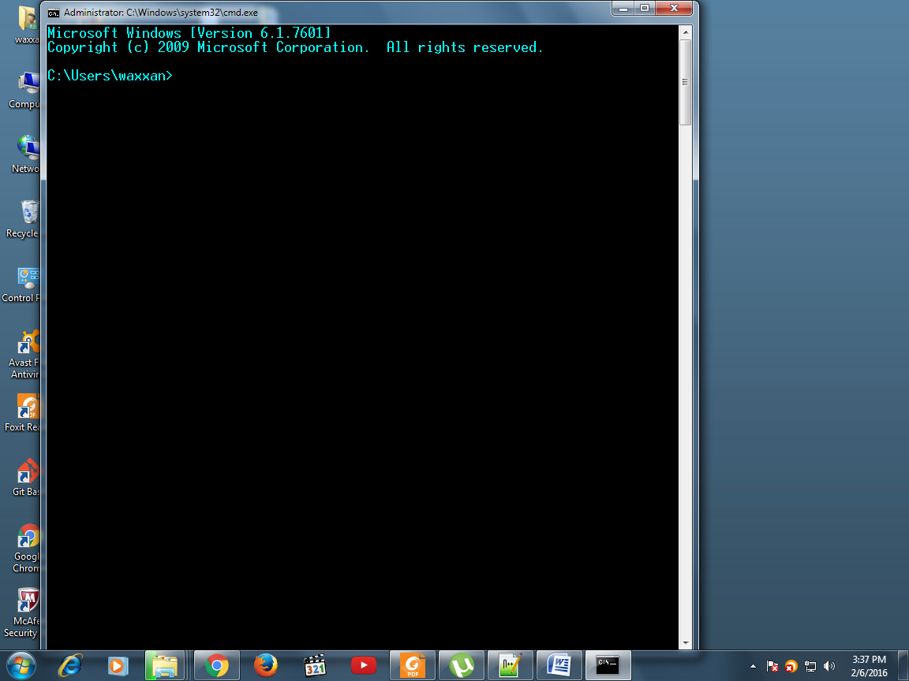
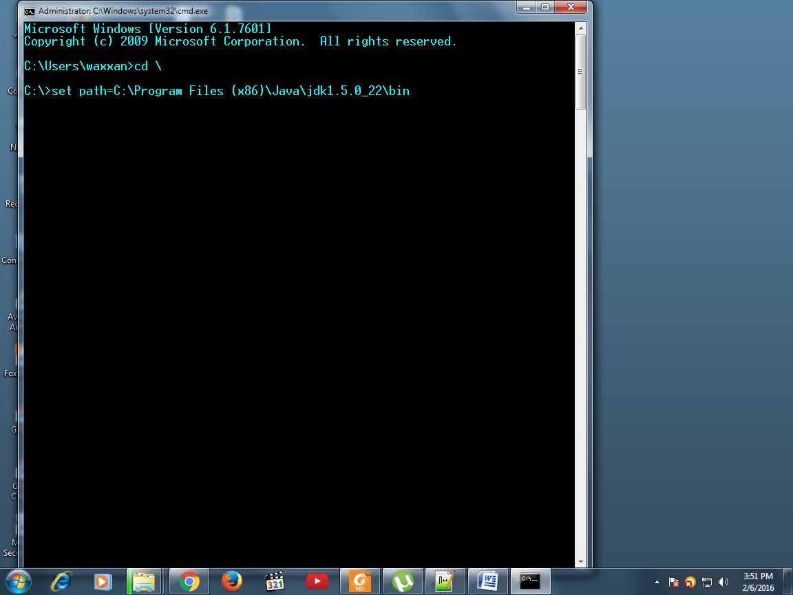
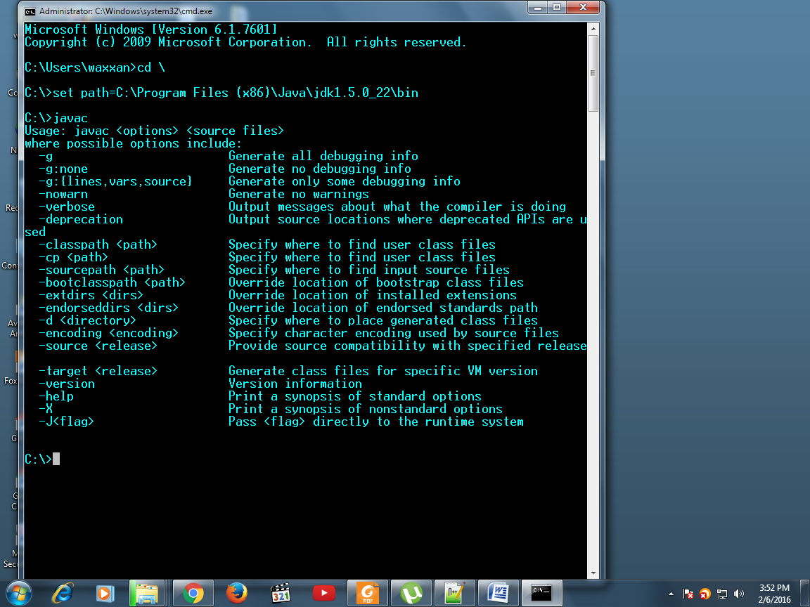
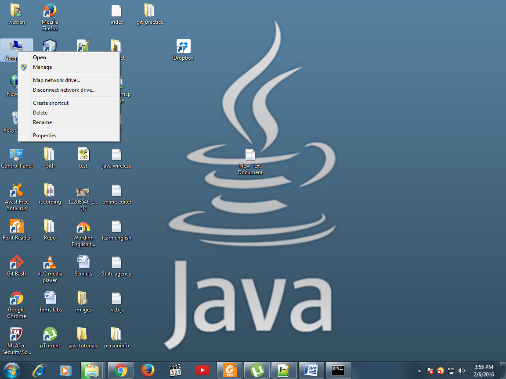
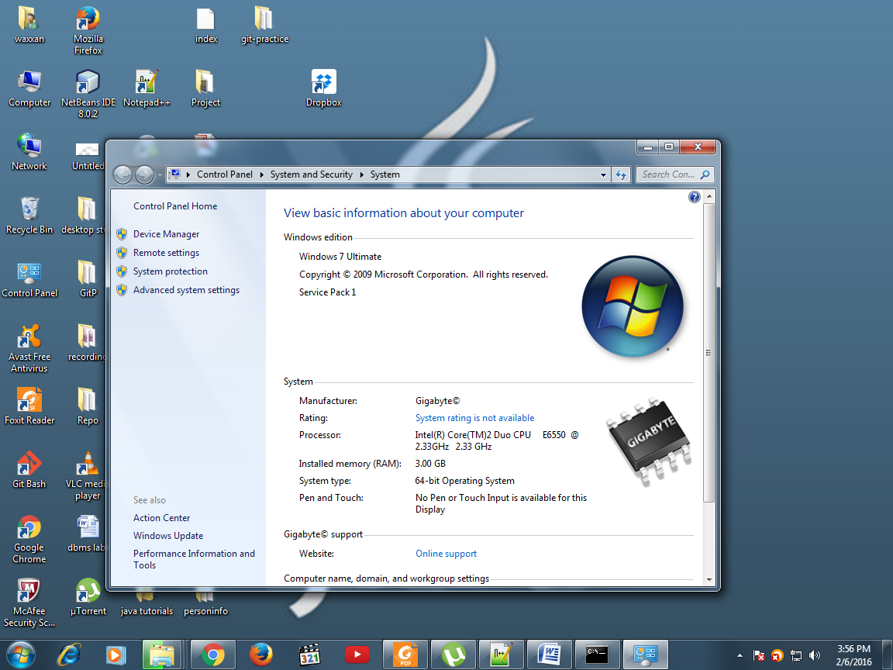
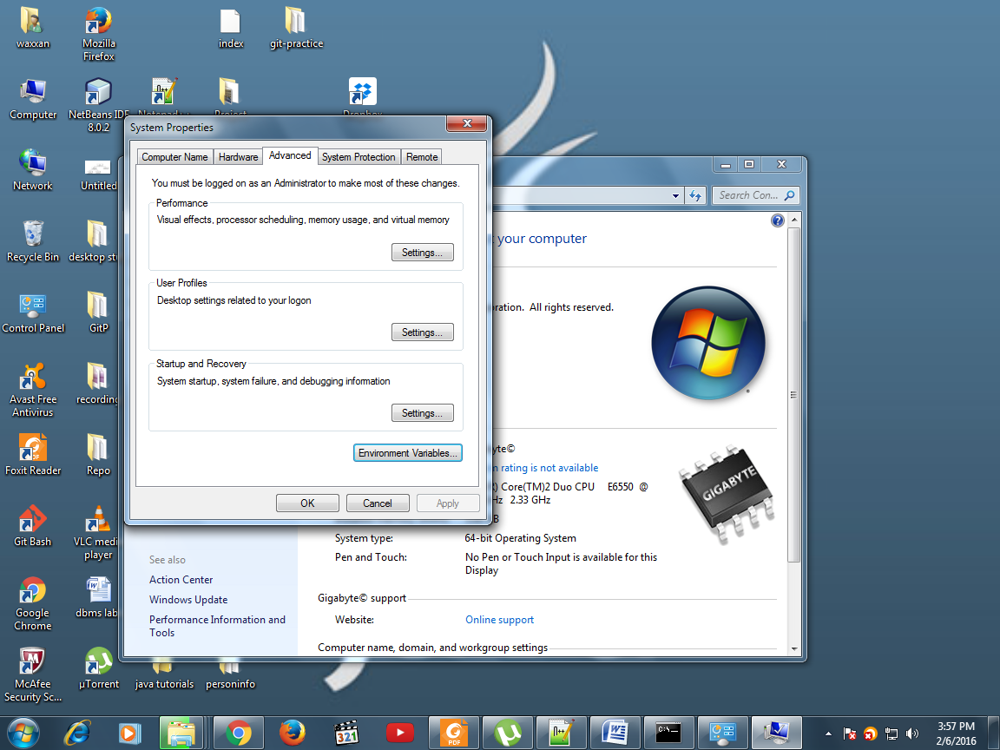
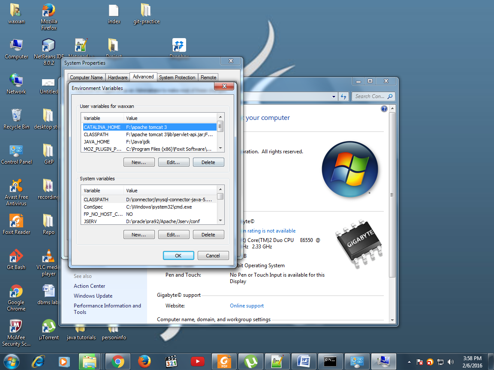
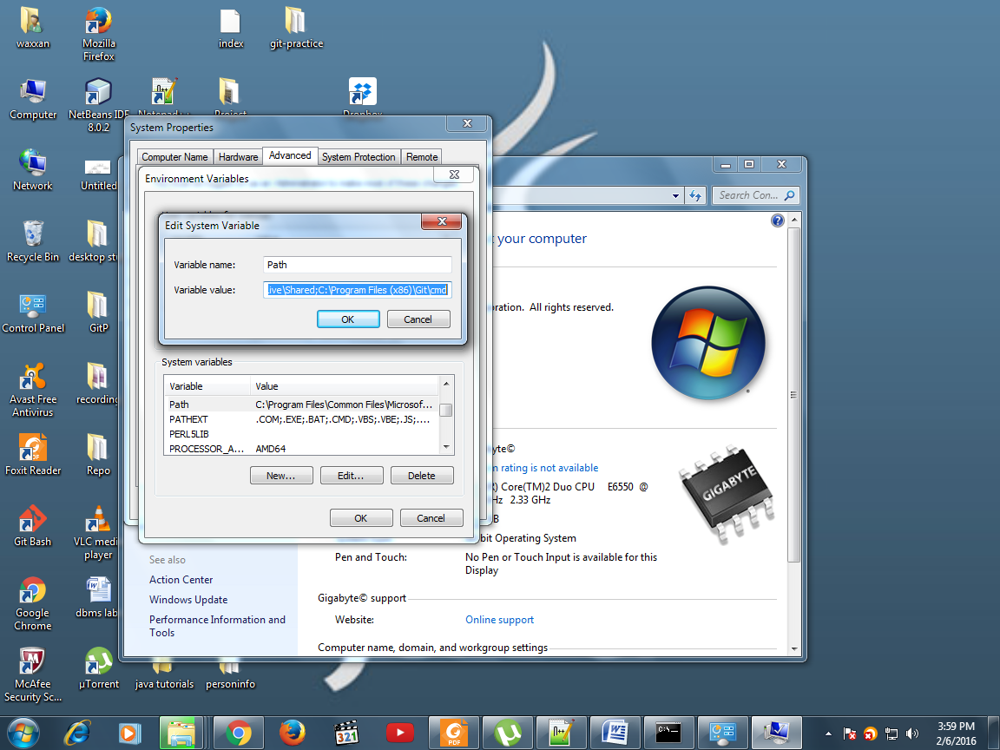

<div id="cont">
    <div id="page">
        <p class="h2"  class="header" style="cursor: default;">Installation and Environment Setting</p>
                 <p class="h3"  class="header" style="cursor: default;">Installation</p>
		
		<p  class="text-justify">
                    1. Download the latest version java development environment j2se(java 2 standard edition) from <br />  <a href="http://java.sun.com">java.sun.com</a>.
                </p>
            
		<p  class="text-justify">
                    <b>Note:</b> j2se also called jdk (java development kit).<br />
                    assume that j2se is installed in C:\Program Files (x86)\Java\jdk1.5.0_22.
                </p>
                <p class="h3"  class="header" style="cursor: default;"> <b>Environment Setting</b></p><br />
                <p class="h4"  class="header" style="cursor: default;"><b>1. How to set Temporary path for jdk?</b></p>
                 <ul class="text-justify">
                     <li>Open the command prompt from <b>Start -> Programs ¬>Accessories ¬> Command Prompt</b>. <br />The command prompt screen would be opened in front of you.</li>
                 </ul>
                    
                   <br /><br />
                    <ul class="text-justify">
                       
                     <li>Write the command on the command prompt according to the following format
                         <br /><b>set path = < java installation directory\bin ></b></li>
                    </ul><br />
                    
                    
                     <br /><br />
                    <ul class="text-justify">
                       
                     <li>To test whether path has been set or not, write <strong>javac</strong> and press <strong>ENTER</strong>. <br />If the list of options displayed as shown in the below figure means that you have successfully completed the steps of path setting.</li>
                    </ul><br />
                    
                    <br /><br />
                    <p class="h4"  class="header" style="cursor: default;"><b>2. How to set permanent path for jdk?</b></p>
                    <ul class="text-justify">
                         <li>In Windows 7 ,you can set the permanent environment variable.</li>
                         <li>Right click on computer icon click on properties as shown below</li>
                    </ul>
                        
                        <br /><br /> 
                        <ul class="text-justify">
                         <li>A System Properties frame would appear as shown in the picture</li>
                        </ul>
                           
                            <br /><br /> 
                            
                            <ul class="text-justify">
                         <li>Select the advanced system settings followed by clicking the Environment Variable button.<br /> 
                             The Environment variables frame would be displayed in front of you</li>
                        </ul>
                           
                            <br /><br /> 
                            
                            <br /><br /> 
                            
                            <ul class="text-justify">
                         <li>Locate the Path variable in the System or user variables, if it is present there, select it by single click.
                         <br >Press <strong>Edit</strong> button.<br > The following dialog box would be appeared.</li>
                        </ul>
                            
                             
                            <br /><br /> 
                            
                            <ul class="text-justify">
                                <li>Write <strong>;C:\Program Files (x86)\Java\jdk1.5.0_22\bin</strong> at the end of the value field.<br /> Press <strong>OK</strong> button. Remember to write semicolon <strong>(;)</strong> before writing the path for java installation directory as illustrated in the above figure.</li>
                                <li>If Path variable does not exist, click the <strong>New</strong> button. Write variable name <strong>“PATH”</strong>, variable value <strong>C:\Program Files (x86)\Java\jdk1.5.0_22\bin</strong> and press <strong>OK</strong> button.</li>
                                <li>Now open the <strong>command prompt</strong> and write <strong>javac</strong>, press <strong>ENTER</strong> button. You see the list of options would be displayed.</li>
                                <li>After setting the path permanently, you have no need to set the path for each new opened command prompt.</li>
                            </ul>
                                
                            
                     
                     
                 
    </div>
 </div>
  
